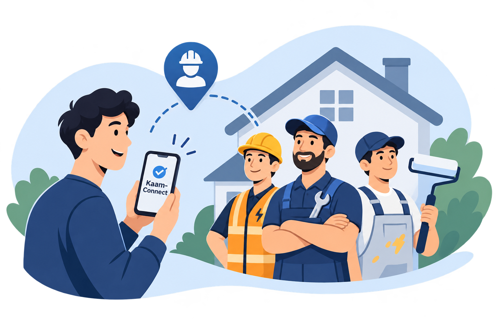

Connecting communities with local service professionals.
Kaam-Connect is a student-developed platform designed to connect people with local service professionals. From plumbing and electrical work to carpentry and painting, our goal is to make finding the right service easier and more convenient.
We aim to bridge the gap between people who need everyday services and professionals who provide them.

Finding reliable local service professionals can sometimes be difficult and time-consuming. People often struggle to find the right person for household repairs and everyday maintenance. Kaam-Connect aims to make this process simpler by bringing different service categories together on one platform.
To make local services more accessible and convenient by helping people connect with suitable service professionals.
To create a connected community where finding and accessing everyday services becomes simple, convenient and hassle-free.
Kaam-Connect is developed through the collaboration and creativity of a team of three students.